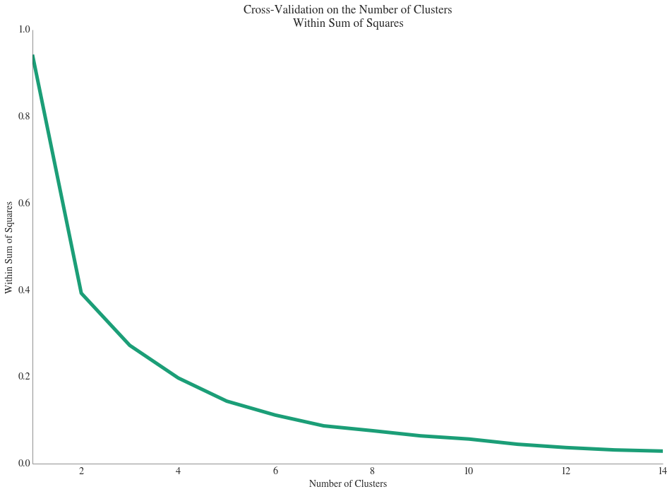
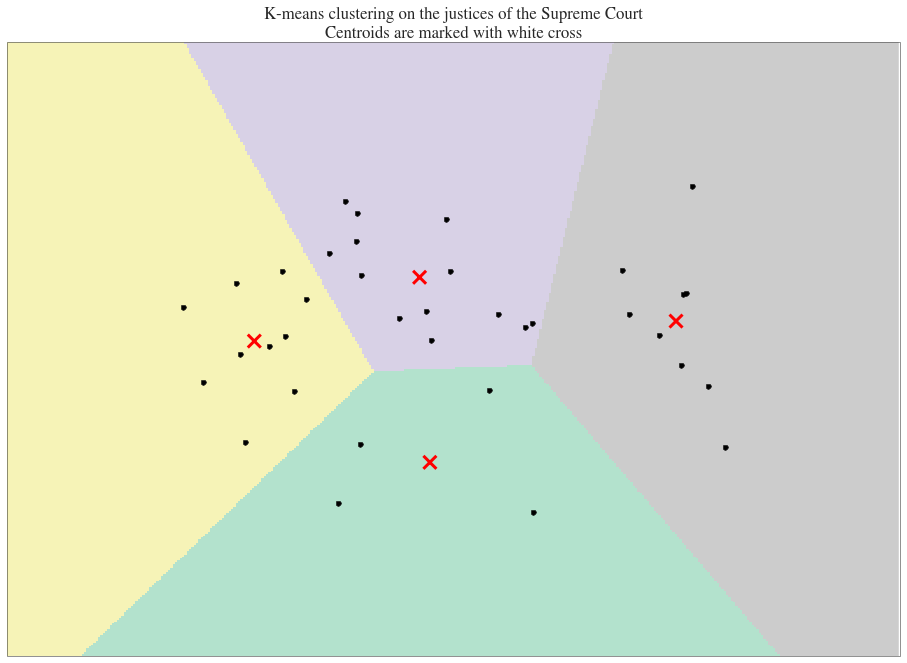

Making Predictions
Is the Supreme Court Ideologically Biased?
Each justice of the Supreme Court is appointed by a President of the United States. Even if this choice is supposed to be the most objective, one may think that the justice was choosen because of his ideological closenness to the President’s ideas. We try to see if this bias exists and has any impact on the Supreme Court decisions.
Descriptive Analysis
On each case raised to the Supreme Court, each justice takes a decision and the final decision is the choice of the Majority. A justice can choose between to directions:
- Liberal
- Conservative
Here is the barplot of the percentages of Liberal/Conservative decisions taken by justices appointed by Democrat/Republican Presidents:

This graph does not describe any particular trend. We can still observe as expected that Democrat-appointed Justices vote 59% of the time Liberal, while it is 52% for the Republican appointed ones. Each case in the Spaeth dataset is associated with an ‘Issue Area’ that describes the general type of the case. If we draw the same graph as above for each of those areas:

Each party is more sensible to its own case types:
- First Amendment, Unions and Criminal Procedures for Democrat-appointed justices
- Unions, Judicial Power and Attorneys for Republican-appointed justices
Our next step is to find groups among justices and see if those groups separate justices that were appointed by Presidents from different parties.
Discovering Groups among Justices
One of the most well-known technique to discover groups among unlbeled data is the K-means clustering algorithm. This algorithm finds group of points based on some features. The features we will be using for this clustering task are:
- Liberal Ratio: Ratio of Liberal (Vs. Conservative) decisions for each justice,
- Opinion Written Ratio: The ratio of cases where the given justice wrote an opinion. Each justice can or callot write an opinion after a case is voted,
- Ratio of Dissent with Majority: The ratio of cases where the given justice disagreed with the majority vote.
We perform the K-means algorithm on this unlabeled data with a number of clusters varying from 2 to 14. We use the Elbow method to find the “best” number of clusters: it is the threshold after which we don’t improve significantly the Within Sum of Squares (WSS) (our loss function here). Here is the graph of the WSS function of the number of clusters:

Our best number of clusters is 4 here. We could have thought that if the Supreme Court is ideologically oriented, then the optimal number of clusters would have been 2. Let’s see how Republican/Democrat-appointed are divided among the clusters:

- Cluster 1: 90% of Republicans, 10% of Democrats
- Cluster 2: 22% of Republicans, 56% of Democrats
- Cluster 3: 31% of Republicans, 69% of Democrats
- Cluster 4: 25% of Republicans, 50% of Democrats
NB: Some of the sums does not sum to 100%, because some of the Appointers (i.e. U.S. Presidents) have a different party than the two ones studied here on their Wikipedia page.
The repartition of the justices in the clusters seems not to be the result of an ideological divergence. As you can see in the previous plot, we represented the points in a two-dimension space (while we have three different features). We performed a dimensionality reduction using Principal Component Analysis before Clustering the data. It would be interesting to see the importance of each feature in the two principal components:
| Features | PC1 | PC2 |
|---|---|---|
| Liberal Ratio | 0.999584 | 0.023069 |
| Dissent Ratio | 0.003893 | -0.702499 |
| Opinion Writing Ratio | 0.028573 | -0.711310 |
The first principal component is entirely explained by the Liberal Ratio which is the most discriminative feature we have here. This results seems logical. The Second Principal Component is equally explained by the Dissent Ration adn the Opinion Writing. Those figures help us understand the clusters plotted above:
- Cluster 1 (top): Average Liberal Ratio, Low Dissent Ratio, Low Opinion Writting
- Cluster 2 (right): High Liberal Ratio, Average Dissent Ratio, Average Opinion Writting
- Cluster 3 (bottom): Average Liberal Ratio, High Dissent Ratio, High Opinion Writting
- Cluster 4 (left): Low Liberal Ratio, Average Dissent Ratio, Average Opinion Writting
Let’s try now to confirm those results using another Clustering technique, Hierarchical Clustering. This method has a major advantage on the previous one: It optimize by tself the number of clusters. It’s a great way to check our results in the previous method. We use the same unlabeled dataset. Let’s see what information we can gather from the dendrogram:

Hierarchical produced four different clusters here., with the following Republican/Democrat within percentages:
- Cluster 1: 33% of Republicans, 44% of Democrats
- Cluster 2: 38% of Republicans, 62% of Democrats
- Cluster 3: 44% of Republicans, 50% of Democrats
- Cluster 4: 100% of Republicans, 0% of Democrats (only 2 justices)
If we observe the average of the featuers in each of the clusters:
| Cluster | Dissent Ratio | Liberal Ratio | Opinion Ratio |
|---|---|---|---|
| Cluster 1 | 0.188383 | 0.301634 | 0.191803 |
| Cluster 2 | 0.207880 | 0.390014 | 0.216675 |
| Cluster 3 | 0.234617 | 0.684211 | 0.249562 |
| Cluster 4 | 0.211852 | 0.522745 | 0.218390 |
The liberal ratio are higher in average in clusters 3 and 4 than in clusters 1 and 2. Again it seems like it’s the most discriminative feature and it’s confirming the first part. the difference of the Dissent and Opinion Writting ratio averages in the clusters are not significative.
Conclusion
The K-means and Hierarchical clustering algorithms output both 4 different clusters, where Democrats and Republicans are not obviously divided (except for some low-numbered clusters). Ideology positions do not affect obviously the Supreme Court decisions.